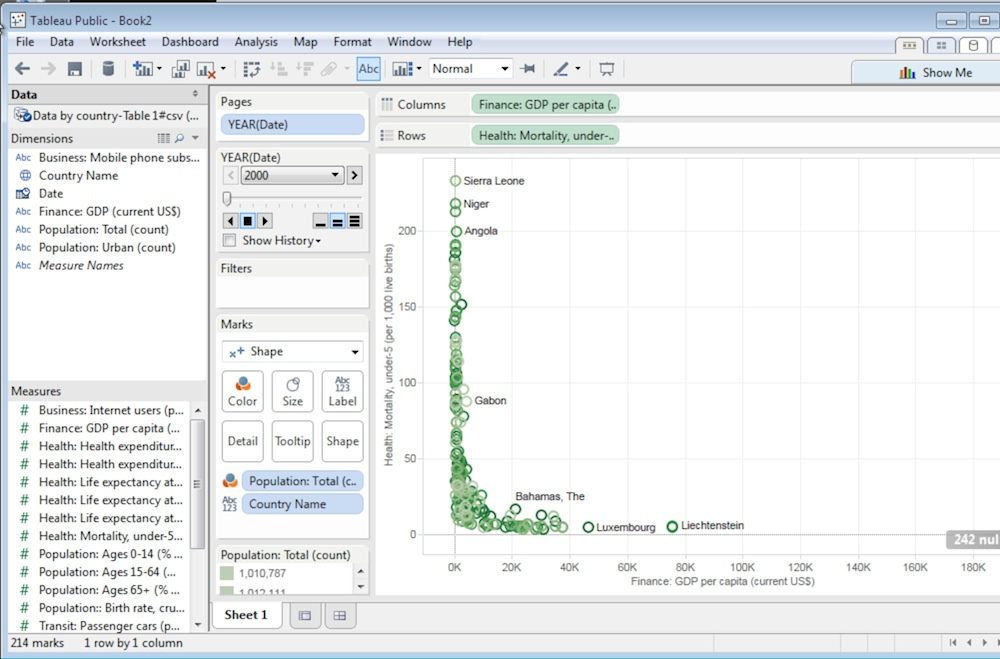
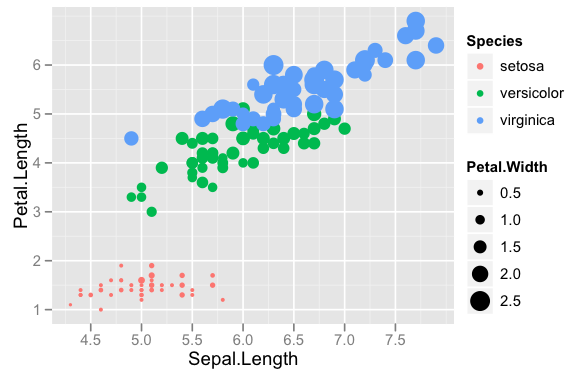
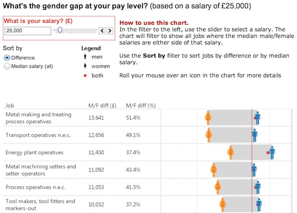
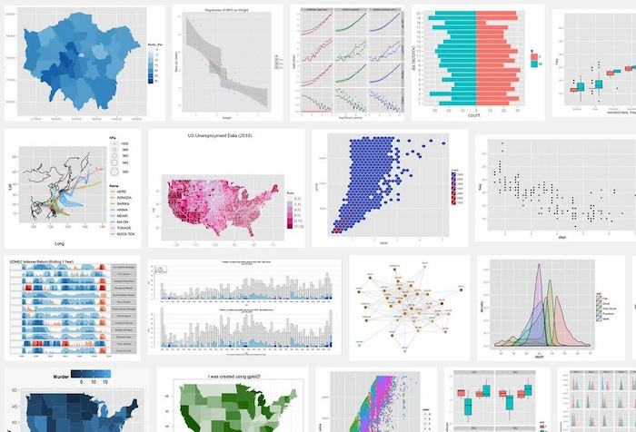
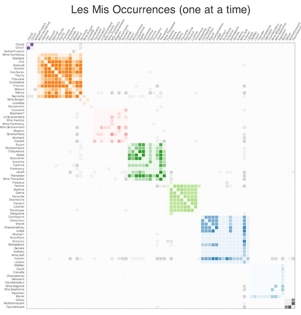
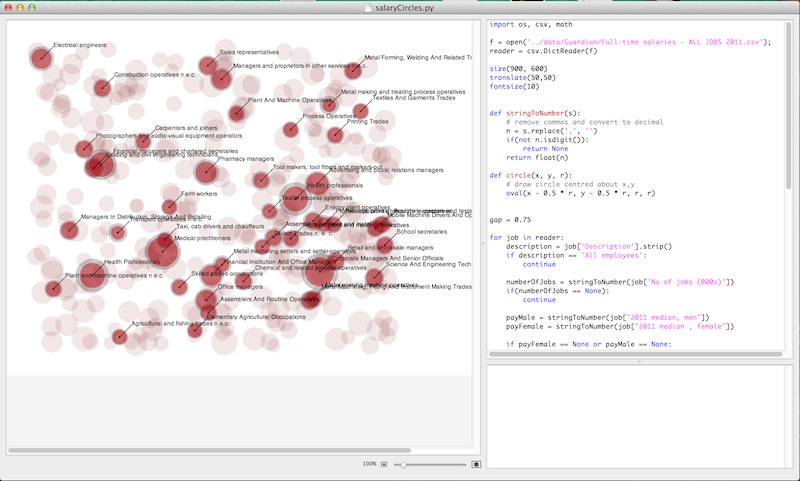
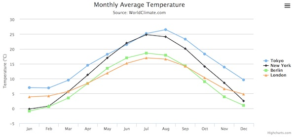
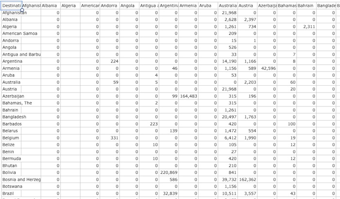

Data Visualisation:
Tools and Processes
Data Visualisation Brighton
@datavisbrighton
Slides by Peter Cook / @animateddata
Discovery & Presentation
Discovery
What is discovery?
It starts with questions
Data exploration
Data analysis
Discovery tools
Spreadsheets (e.g. Excel, OpenOffice)
Tableau
R + ggplot2*
Python / ipython / pandas / matplotlib*
(* = free)
Tableau
R + ggplot2

qplot(Sepal.Length, Petal.Length, data = iris, color = Species,
size = Petal.Width)
blog.echen.me/2012/01/17/quick-introduction-to-ggplot2/
iPython Notebook / matplotlib

titanic = pd.read_excel("data/titanic.xls", "titanic")
bp = titanic.boxplot(column='age', by='pclass', grid=False)
for i in [1,2,3]:
y = titanic.age[titanic.pclass==i].dropna()
x = np.random.normal(i, 0.04, size=len(y))
plot(x, y, 'r.', alpha=0.2)Presentation
Desktop
Browser-based
Desktop
Excel
Tableau
R + ggplot2 (free)
Python / ipython / pandas / matplotlib (free)
NodeBox (free)
Excel

http://www.datadrivenconsulting.com/2010/02/data-visualization-challenge-my-dashboard-design/
Excel

Power Map plug-in
Tableau examples
R / ggplot2
Python / matplotlib

Python / bokeh
NodeBox 1
NodeBox 3

Browser-based
(JavaScript libraries)
Highcharts, Google Charts etc.
D3
Custom coded (SVG, Canvas)
See also datavisualization.ch
Highcharts, Google Charts etc.
Off-the-shelf charts
D3
Usually requires custom coding

Built with D3
Custom coded
Driven from tab-separated-value data

www.nytimes.com/interactive/2013/05/25/sunday-review/corporate-taxes.html
My approach
Primarily programmatic (JavaScript)
More often than not, driven from spreadsheet (CSV) data
Usually use D3, but not always
Discovery
Mix of Excel & custom scripts
Moving towards Python, pandas etc.
Presentation
Browser based
Load data in from csv or JSON
Simple reformatting
D3 & custom code to present data
Example

Data from World Bank
Matrix of migratory flows (spreadsheet)
Convert into JSON format using Python (offline)
{"Canada":
{"totalIn": 7202340,
"totalOut": 1185392,
"out": [
{"country": "United States", "amount": 834945}
],
"in": [
{"country": "China", "amount": 543573},
{"country": "Germany", "amount": 199541},
{"country": "Guyana", "amount": 101505},
{"country": "Hong Kong, China", "amount": 250786},
etc.
Python is often used server-side so this could be live data...
Simple webpage (one HTML file)
Load in JSON using JavaScript
Draw map using SVG, JavaScript and D3
Summary
Analysis / Presentation
App / Visual / Programmatic
Visualisation: the Good, the Bad & the Ugly
22nd July 7.30pm
The Skiff, Brighton
@datavisbrighton